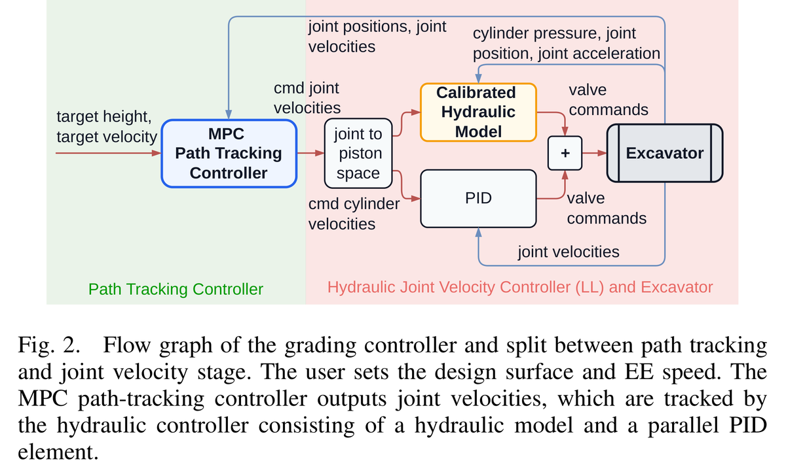

#001 2026 📖 상세요약대형 굴착기 고정밀 정지작업
High precision hydraulic excavator control for heavy-duty grading
LS와 NFC라는 서로 다른 유압 구조를 저수준 속도제어에서 흡수하고, 장비 독립 MPC가 설계면을 추종한다. 약 20분 보정 뒤 11.5 t·25 t 굴착기에서 1.4·1.8 cm RMSE를 달성해 상용 제어기의 4.7 cm보다 2.6배 정밀했다.
📖 상세 요약 보기 📄 원문 · Obsidian